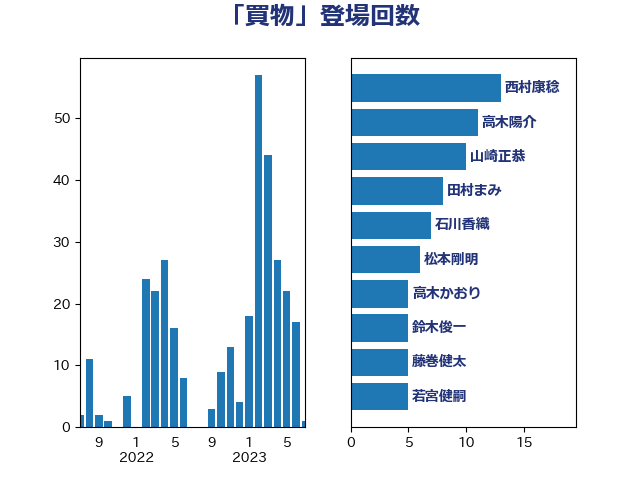

単語「買物」

| 西村康稔 | 自由民主党 | 13 回 |
| 高木陽介 | 公明党 | 11 回 |
| 山崎正恭 | 公明党 | 10 回 |
| 田村まみ | 国民民主党 | 8 回 |
| 石川香織 | 立憲民主党 | 7 回 |
| 松本剛明 | 自由民主党 | 6 回 |
| 高木かおり | 日本維新の会 | 5 回 |
| 鈴木俊一 | 自由民主党 | 5 回 |
| 藤巻健太 | 日本維新の会 | 5 回 |
| 若宮健嗣 | 自由民主党 | 5 回 |
| 新妻秀規 | 公明党 | 5 回 |
| 野村哲郎 | 自由民主党 | 4 回 |
| 西銘恒三郎 | 自由民主党 | 4 回 |
| 矢倉克夫 | 公明党 | 4 回 |
| 渡辺博道 | 自由民主党 | 4 回 |
| 横沢高徳 | 立憲民主党 | 4 回 |
| 柴愼一 | 立憲民主党 | 4 回 |
| 枝野幸男 | 立憲民主党 | 4 回 |
| 斉藤鉄夫 | 公明党 | 4 回 |
| 岸田文雄 | 自由民主党 | 4 回 |
| 住吉寛紀 | 日本維新の会 | 4 回 |
| 伊藤孝恵 | 国民民主党 | 4 回 |
| 金子恭之 | 自由民主党 | 3 回 |
| 赤木正幸 | 日本維新の会 | 3 回 |
| 竹谷とし子 | 公明党 | 3 回 |
| 河西宏一 | 公明党 | 3 回 |
| 森屋隆 | 立憲民主党 | 3 回 |
| 松川るい | 自由民主党 | 3 回 |
| 寺田静 | 無所属 | 3 回 |
| 吉田統彦 | 立憲民主党 | 3 回 |
| 高見康裕 | 自由民主党 | 2 回 |
| 階猛 | 立憲民主党 | 2 回 |
| 長友慎治 | 国民民主党 | 2 回 |
| 野中厚 | 自由民主党 | 2 回 |
| 遠藤良太 | 日本維新の会 | 2 回 |
| 辻元清美 | 立憲民主党 | 2 回 |
| 落合貴之 | 立憲民主党 | 2 回 |
| 芳賀道也 | 国民民主党 | 2 回 |
| 竹内譲 | 公明党 | 2 回 |
| 秋葉賢也 | 自由民主党 | 2 回 |
| 福田昭夫 | 立憲民主党 | 2 回 |
| 石田昌宏 | 自由民主党 | 2 回 |
| 石井苗子 | 日本維新の会 | 2 回 |
| 白石洋一 | 立憲民主党 | 2 回 |
| 木村英子 | れいわ新選組 | 2 回 |
| 岬麻紀 | 日本維新の会 | 2 回 |
| 岡田直樹 | 自由民主党 | 2 回 |
| 山田勝彦 | 立憲民主党 | 2 回 |
| 山本佐知子 | 自由民主党 | 2 回 |
| 大西健介 | 立憲民主党 | 2 回 |
| 堀場幸子 | 日本維新の会 | 2 回 |
| 吉井章 | 自由民主党 | 2 回 |
| 古屋範子 | 公明党 | 2 回 |
| 中野英幸 | 自由民主党 | 2 回 |
| 中川郁子 | 自由民主党 | 2 回 |
| 三上えり | 立憲民主党 | 2 回 |
| 一谷勇一郎 | 日本維新の会 | 2 回 |
| おおつき紅葉 | 立憲民主党 | 2 回 |
| 鬼木誠 | 立憲民主党 | 1 回 |
| 高良鉄美 | 無所属 | 1 回 |
| 馬場伸幸 | 日本維新の会 | 1 回 |
| 音喜多駿 | 日本維新の会 | 1 回 |
| 青木愛 | 立憲民主党 | 1 回 |
| 長妻昭 | 立憲民主党 | 1 回 |
| 長坂康正 | 自由民主党 | 1 回 |
| 鈴木英敬 | 自由民主党 | 1 回 |
| 鈴木義弘 | 国民民主党 | 1 回 |
| 鈴木庸介 | 立憲民主党 | 1 回 |
| 金子俊平 | 自由民主党 | 1 回 |
| 野田佳彦 | 立憲民主党 | 1 回 |
| 輿水恵一 | 公明党 | 1 回 |
| 谷合正明 | 公明党 | 1 回 |
| 西田昌司 | 自由民主党 | 1 回 |
| 西田実仁 | 公明党 | 1 回 |
| 西岡秀子 | 国民民主党 | 1 回 |
| 藤川政人 | 自由民主党 | 1 回 |
| 若松謙維 | 公明党 | 1 回 |
| 米山隆一 | 立憲民主党 | 1 回 |
| 篠原孝 | 立憲民主党 | 1 回 |
| 福重隆浩 | 公明党 | 1 回 |
| 福島みずほ | 社会民主党 | 1 回 |
| 神谷政幸 | 自由民主党 | 1 回 |
| 神津たけし | 立憲民主党 | 1 回 |
| 石川博崇 | 公明党 | 1 回 |
| 田畑裕明 | 自由民主党 | 1 回 |
| 瀬戸隆一 | 自由民主党 | 1 回 |
| 源馬謙太郎 | 立憲民主党 | 1 回 |
| 清水貴之 | 日本維新の会 | 1 回 |
| 浅田均 | 日本維新の会 | 1 回 |
| 泉健太 | 立憲民主党 | 1 回 |
| 沢田良 | 日本維新の会 | 1 回 |
| 江藤拓 | 自由民主党 | 1 回 |
| 江島潔 | 自由民主党 | 1 回 |
| 永井学 | 自由民主党 | 1 回 |
| 武部新 | 自由民主党 | 1 回 |
| 櫻井周 | 立憲民主党 | 1 回 |
| 横山信一 | 公明党 | 1 回 |
| 森山浩行 | 立憲民主党 | 1 回 |
| 柚木道義 | 立憲民主党 | 1 回 |
| 杉本和巳 | 日本維新の会 | 1 回 |
| 末次精一 | 立憲民主党 | 1 回 |
| 広瀬めぐみ | 自由民主党 | 1 回 |
| 平木大作 | 公明党 | 1 回 |
| 市村浩一郎 | 日本維新の会 | 1 回 |
| 川田龍平 | 立憲民主党 | 1 回 |
| 川崎ひでと | 自由民主党 | 1 回 |
| 岸真紀子 | 立憲民主党 | 1 回 |
| 岡本あき子 | 立憲民主党 | 1 回 |
| 山本香苗 | 公明党 | 1 回 |
| 山本剛正 | 日本維新の会 | 1 回 |
| 山口那津男 | 公明党 | 1 回 |
| 山井和則 | 立憲民主党 | 1 回 |
| 小熊慎司 | 立憲民主党 | 1 回 |
| 小寺裕雄 | 自由民主党 | 1 回 |
| 宮本徹 | 日本共産党 | 1 回 |
| 宮崎政久 | 自由民主党 | 1 回 |
| 室井邦彦 | 日本維新の会 | 1 回 |
| 守島正 | 日本維新の会 | 1 回 |
| 大石あきこ | れいわ新選組 | 1 回 |
| 國場幸之助 | 自由民主党 | 1 回 |
| 吉良よし子 | 日本共産党 | 1 回 |
| 吉田久美子 | 公明党 | 1 回 |
| 古川元久 | 国民民主党 | 1 回 |
| 友納理緒 | 自由民主党 | 1 回 |
| 北神圭朗 | 無所属 | 1 回 |
| 勝部賢志 | 立憲民主党 | 1 回 |
| 加藤鮎子 | 自由民主党 | 1 回 |
| 前川清成 | 日本維新の会 | 1 回 |
| 伊藤渉 | 公明党 | 1 回 |
| 伊藤岳 | 日本共産党 | 1 回 |
| 伊佐進一 | 公明党 | 1 回 |
| 仁木博文 | 無所属 | 1 回 |
| 井原巧 | 自由民主党 | 1 回 |
| 亀岡偉民 | 自由民主党 | 1 回 |
| 中川宏昌 | 公明党 | 1 回 |
| 中司宏 | 日本維新の会 | 1 回 |
| 上野通子 | 自由民主党 | 1 回 |
| 上田清司 | 国民民主党 | 1 回 |
| ながえ孝子 | 無所属 | 1 回 |